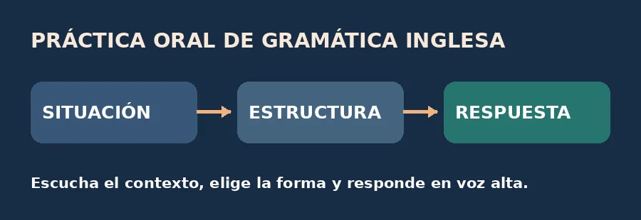

PROYECTO INGLÉS · B2 ALTO–C1
Gramática Inglesa Élite
Traducción rápida, corrección y práctica oral
40 horas · 8 unidades · Docente: Rubén Muñoz Valadés

En cada unidad alternarás explicaciones, respuestas en voz alta y simulaciones. Supera 4 de 5 preguntas para abrir la siguiente unidad.
1. Tiempo, aspecto y perspectiva
Objetivo general de la unidad
Elegir el tiempo y el aspecto según el límite temporal, la observación y el resultado.
Explicación y ejemplos
En inglés, el anclaje temporal y la forma de mirar una acción son decisiones distintas. El pasado simple coloca el hecho en un intervalo cerrado: “I sent it yesterday”. El presente perfecto relaciona el hecho con el momento actual sin fecharlo en un pasado cerrado: “I’ve sent it, so you can open it now”. El intervalo con “today” puede tratarse como abierto si hoy aún cuenta para la conversación. «Ya lo envié» admite ambas opciones según el contexto.
El perfecto continuo destaca la duración o la actividad reciente: “I’ve been drafting the report all morning”. El perfecto simple facilita contar resultados terminados: “I’ve drafted three sections”. Con estados como know, prefer o own se suele usar el simple: “I’ve known her since 2018”. “I’ve been thinking about it” funciona porque think significa reflexionar, no tener una opinión estable.
Dentro de una narración, el pasado perfecto sitúa un hecho anterior a otro punto pasado: “By the time we arrived, they had left”. Si “after” ya fija el orden, se puede usar el pasado simple en las dos proposiciones: “After they left, we locked up”. Desde el futuro, “By Friday, I’ll have finished” fija el límite al que llegará el resultado. “At noon tomorrow, I’ll be interviewing” describe una actividad en curso a esa hora.
Cómo se construyen las frases
S = sujeto · V = verbo en forma base · PP = participio pasado · V-ing = forma en -ing · Ø = sin artículo. Las fórmulas usan verbos léxicos. Con be como verbo principal, se dice “She is ready / She isn’t ready / Is she ready?”.
| Forma | Afirmativa | Negativa | Pregunta | Uso y ejemplo bilingüe |
|---|---|---|---|---|
| Presente simple | S + V / V-s | S + do/does not + V | Do/Does + S + V? | Rutinas y estados. She checks the figures every Friday. → Revisa las cifras cada viernes. Después de does se usa check, sin -s. |
| Presente continuo | S + am/is/are + V-ing | S + am/is/are not + V-ing | Am/Is/Are + S + V-ing? | Actividad en curso o situación temporal. She is checking the figures now. → Está revisando las cifras ahora. |
| Presente perfecto simple | S + have/has + PP | S + have/has not + PP | Have/Has + S + PP? | Resultado relacionado con el presente. She has checked three files so far. → Ha revisado tres archivos hasta ahora. |
| Presente perfecto continuo | S + have/has been + V-ing | S + have/has not been + V-ing | Have/Has + S + been + V-ing? | Actividad o duración hasta el presente. She has been checking files since nine. → Lleva revisando archivos desde las nueve. |
| Pasado simple | S + V-ed / forma irregular | S + did not + V | Did + S + V? | Hecho en un periodo acabado. She checked the figures yesterday. → Revisó las cifras ayer. Tras did se usa la forma base. |
| Pasado continuo | S + was/were + V-ing | S + was/were not + V-ing | Was/Were + S + V-ing? | Actividad en desarrollo en un punto pasado. She was checking the figures when I called. → Estaba revisando las cifras cuando llamé. |
| Pasado perfecto simple | S + had + PP | S + had not + PP | Had + S + PP? | Hecho anterior a otro momento pasado. She had checked the figures before we arrived. → Había revisado las cifras antes de que llegáramos. |
| Pasado perfecto continuo | S + had been + V-ing | S + had not been + V-ing | Had + S + been + V-ing? | Duración o actividad anterior a un punto pasado. She had been checking figures for an hour when we arrived. → Llevaba una hora revisando cifras cuando llegamos. |
| Futuro simple con will | S + will + V | S + will not + V | Will + S + V? | Predicción, ofrecimiento o decisión. I’ll check the figures now. → Revisaré las cifras ahora. |
| Futuro continuo | S + will be + V-ing | S + will not be + V-ing | Will + S + be + V-ing? | Actividad en desarrollo en un punto futuro. I’ll be checking the figures at noon. → Estaré revisando las cifras a mediodía. |
| Futuro perfecto simple | S + will have + PP | S + will not have + PP | Will + S + have + PP? | Resultado anterior a un límite futuro. I’ll have checked the figures by noon. → Habré revisado las cifras para mediodía. |
| Futuro perfecto continuo | S + will have been + V-ing | S + will not have been + V-ing | Will + S + have been + V-ing? | Duración acumulada en un punto futuro. By noon I’ll have been checking figures for three hours. → A mediodía llevaré tres horas revisando cifras. |
| Intención con going to | S + am/is/are going to + V | S + am/is/are not going to + V | Am/Is/Are + S + going to + V? | Intención previa o predicción con indicios. We’re going to revise the contract tonight. → Vamos a revisar el contrato esta noche. |
Guía de decisión
Separa «ayer» (intervalo cerrado), «hoy» (abierto), revisión (actividad) y validaciones (resultado); fija «viernes» como límite y redacta un parte breve.
Ronda oral interactiva
Lee el enunciado, traduce en voz alta y abre el modelo para corregirte. Cierra las respuestas y repite con menos tiempo.
Ya he corregido dos apartados.
I’ve corrected two sections.
Llevo dos horas corrigiendo.
I’ve been correcting it for two hours.
Lo corregí el lunes.
I corrected it on Monday.
Para mañana ya lo habré corregido.
I’ll have corrected it by tomorrow.
Cambia a negativa y después a pregunta: She checks the figures on Fridays.
She doesn’t check the figures on Fridays. Does she check the figures on Fridays?
Pasado simple: Lina entregó el informe. Di que no lo entregó y pregunta si lo hizo.
Lina submitted the report. Lina didn’t submit the report. Did Lina submit the report?
Pregunta si llevan esperando desde las nueve y responde que no.
Have they been waiting since nine? No, they haven’t.
A mediodía habremos revisado cinco expedientes. Pregunta por el resultado y niega que se vayan a revisar cinco.
By noon, we’ll have reviewed five files. Will we have reviewed five files by noon? We won’t have reviewed five files by noon.
Ejercicio guiado · 30 minutos
Objetivo: Elegir el tiempo y el aspecto según el límite temporal, la observación y el resultado.
Materiales: ficha del caso, cuaderno y reloj.
El martes a las 12:00 llegan dos mensajes: se cerró la operación ayer, pero hoy llevas dos horas revisando tres anexos y ya has validado dos. El jefe quiere el tercer anexo antes del viernes.
- Lee el caso y subraya los hechos.
- Separa «ayer» (intervalo cerrado), «hoy» (abierto), revisión (actividad) y validaciones (resultado); fija «viernes» como límite y redacta un parte breve.
- Escribe tu respuesta y ensáyala sin leer.
- Contrasta frase por frase con la resolución y marca qué dato conserva cada forma.
Resultado esperado y resolución comentada: We closed the deal yesterday. I’ve been reviewing the appendices for two hours. I’ve validated two so far. By Friday, I’ll have validated the third. “So far” delimita resultados hasta ahora; “by” establece un límite, no una duración.
Criterio: conservar todos los hechos y justificar las decisiones indicadas en el procedimiento.
Traducción oral · 45 min
Objetivo: Elegir el tiempo y el aspecto según el límite temporal, la observación y el resultado.
Materiales: Guion bilingüe y reloj.
Ya he corregido dos apartados. / Llevo dos horas corrigiendo. / Lo corregí el lunes. / Para mañana ya lo habré corregido.
Procedimiento: Primero traduce sin leer las soluciones. Repite con sujeto distinto. En la tercera ronda alterna afirmación y pregunta. En la cuarta, cambia un dato temporal o el tono. Anota dos errores y repite las frases completas.
Resultado esperado y criterio: Producir cuatro respuestas comprensibles y conservar tiempo, significado y registro.
Transformación · 35 min
Objetivo: Elegir el tiempo y el aspecto según el límite temporal, la observación y el resultado.
Materiales: Cuaderno y texto base.
Cambia el contexto de “She wrote four emails yesterday” a un balance de un periodo aún abierto; después destaca el proceso desde las nueve.
Procedimiento: Señala verbo, referencia y foco. Cambia solo la dimensión que pide el enunciado. Construye tres variantes cambiando sujeto, objeto y contexto. Comprueba que conservas los datos que no debían cambiar.
Resultado esperado y criterio: Conservar los datos del original y justificar cada cambio formal.
Trabajo en parejas · 55 min
Objetivo: Elegir el tiempo y el aspecto según el límite temporal, la observación y el resultado.
Materiales: Tarjeta de roles, reloj y hoja de observación.
Presentad un informe de incidentes: el sistema cayó ayer, se han resuelto tres alertas hoy, y el equipo trabaja desde las ocho. Alternad responsable y auditor y justificad cada anclaje.
Procedimiento: Preparad qué sabe cada persona. Representad el caso y cambiad de rol. Anotad un error gramatical y un dato ambiguo. Repetid el intercambio corrigiendo ambos.
Resultado esperado y criterio: Usar las estructuras del caso, respetar el turno y corregir una ambigüedad tras la devolución.
Reto · 45 min
Objetivo: Elegir el tiempo y el aspecto según el límite temporal, la observación y el resultado.
Materiales: Cuaderno y grabadora opcional.
Narra una llegada tardía: el tren salió antes de que llegaras, buscaste un taxi y a las nueve del día siguiente estarás viajando.
Procedimiento: Escribe qué debe entender el destinatario. Prepara un borrador, léelo en voz alta y comprueba que expresa el significado pedido. Haz una segunda versión con un contexto distinto.
Resultado esperado y criterio: Entregar dos versiones y justificar que el cambio de contexto queda reflejado.
Refuerzo · 25 min
Objetivo: Elegir el tiempo y el aspecto según el límite temporal, la observación y el resultado.
Materiales: Cuaderno o tarjetas.
Corrige “I’ve met Jo in 2020” y “I’ve been knowing Jo for years”.
Procedimiento: Corrige primero sin consultar la teoría. Indica la regla y propone una frase nueva con la misma estructura. Tras una pausa, corrige el enunciado de nuevo y registra el cambio.
Resultado esperado y criterio: Localizar el error, aplicar la regla y producir un ejemplo nuevo correcto.
Autoevaluación · 20 minutos
Marca una respuesta por pregunta. Supera 4 de 5 antes de avanzar.
Resumen de lo aprendido en la unidad
Ancla cada frase en un intervalo, decide si comunicas proceso o resultado y nombra un punto de referencia si usas un perfecto de pasado o de futuro.
2. Modalidad, inferencia y cortesía
Objetivo general de la unidad
Graduar certeza, obligación y cortesía distinguiendo forma, evidencia y propósito.
Explicación y ejemplos
“Must” puede expresar una obligación (“You must show ID”) o una deducción fuerte (“She must be in her office”). En deducciones negativas, “can’t” expresa incompatibilidad con la evidencia: “She can’t be in Madrid; I just spoke to her in Leeds”. En reglas, “mustn’t” prohíbe y “don’t have to” elimina una obligación: no son intercambiables. “You should” suele proponer un criterio o recomendar.
Al evaluar el pasado, usa modal + have + participio. “She must have missed the train” presenta una inferencia, “she might have missed it” presenta una posibilidad y “she can’t have caught it” descarta la hipótesis. “You should have called” critica retrospectivamente. “You needn’t have called” implica que llamaste y era innecesario; “you didn’t need to call” expresa que no había necesidad y por sí solo no decide si llamaste.
La cortesía depende del rol y del coste de la petición. “Could you send it today?” es una petición convencional, no una consulta literal sobre capacidad pasada. “Would you mind sending it today?” requiere -ing. Si te preguntan “Would you mind opening the window?”, “Not at all” acepta abrirla. “May I…?” pide permiso con un tono relativamente formal; “Could I…?” suele funcionar en un entorno profesional.
Cómo se construyen las frases
| Construcción | Fórmula | Ejemplo bilingüe | Punto de control |
|---|---|---|---|
| Modal en afirmativa, negativa y pregunta | S + modal + V / S + modal + not + V / modal + S + V? | He can help. He can’t help. Can he help? → Puede ayudar. No puede ayudar. ¿Puede ayudar? | El auxiliar se mueve al frente. Evita “Does he can help?” y “He can helps”. |
| Deducción de pasado | S + must/might/could/can’t + have + PP | They might have left early. → Puede que se hayan ido temprano. | “Must have” expresa una deducción fuerte, “might have” una posibilidad y “can’t have” descarta una hipótesis. |
| Obligación y ausencia de obligación | S + must / mustn’t + V; S + do/does not have to + V | You mustn’t sign here. You don’t have to sign today. → Está prohibido firmar aquí. No es obligatorio firmar hoy. | Mantén separados «prohibido» y «opcional». Para una obligación pasada utiliza “had to”. |
| Pedir y responder | Could + S + V? / Would + S + mind + V-ing? | Would you mind closing the window? — Not at all. → ¿Te importaría cerrar la ventana? — En absoluto. | Tras “mind” se usa -ing. “Not at all” acepta la petición. |
| Reproche o acción innecesaria pasada | S + should/needn’t + have + PP | You should have called. You needn’t have called. → Deberías haber llamado. No hacía falta que llamaras (y llamaste). | “Should have” señala una expectativa pasada. “Needn’t have” da por realizada la acción. |
Guía de decisión
Distingue hechos confirmados de una explicación posible; construye una inferencia en pasado y tres reglas con fuerzas diferentes. Termina con una petición al conserje.
Ronda oral interactiva
Lee el enunciado, traduce en voz alta y abre el modelo para corregirte. Cierra las respuestas y repite con menos tiempo.
Debe de haber salido.
He must have left.
Puede que haya salido.
He might have left.
No puede haber salido.
He can’t have left.
Debió habernos avisado.
He should have told us.
Transforma “They can open it” en negativa, interrogativa y respuesta breve afirmativa.
They can’t open it. Can they open it? Yes, they can.
Tienes permiso para salir. Pregunta por permiso con may y responde de modo cortés.
May I leave now? Yes, of course.
Niega que sea obligatorio esperar y luego di que está prohibido irse.
You don’t have to wait. You mustn’t leave.
Ejercicio guiado · 30 minutos
Objetivo: Graduar certeza, obligación y cortesía distinguiendo forma, evidencia y propósito.
Materiales: ficha del caso, cuaderno y reloj.
A las nueve recepción cerró. Leo salió a las ocho y cincuenta, pero sigue dentro del edificio según el registro. El protocolo obliga a usar tarjeta, prohíbe prestarla y permite asistir a la reunión sin corbata.
- Lee el caso y subraya los hechos.
- Distingue hechos confirmados de una explicación posible; construye una inferencia en pasado y tres reglas con fuerzas diferentes. Termina con una petición al conserje.
- Escribe tu respuesta y ensáyala sin leer.
- Contrasta frase por frase con la resolución y marca qué dato conserva cada forma.
Resultado esperado y resolución comentada: Leo might have missed the last lift. Staff must use their cards. They mustn’t lend them to anyone. They don’t have to wear a tie. Could you check the access log? La posibilidad del ascensor no se presenta como hecho.
Criterio: conservar todos los hechos y justificar las decisiones indicadas en el procedimiento.
Traducción oral · 45 min
Objetivo: Graduar certeza, obligación y cortesía distinguiendo forma, evidencia y propósito.
Materiales: Guion bilingüe y reloj.
Debe de haber salido. / Puede que haya salido. / No puede haber salido. / Debió habernos avisado.
Procedimiento: Primero traduce sin leer las soluciones. Repite con sujeto distinto. En la tercera ronda alterna afirmación y pregunta. En la cuarta, cambia un dato temporal o el tono. Anota dos errores y repite las frases completas.
Resultado esperado y criterio: Producir cuatro respuestas comprensibles y conservar tiempo, significado y registro.
Transformación · 35 min
Objetivo: Graduar certeza, obligación y cortesía distinguiendo forma, evidencia y propósito.
Materiales: Cuaderno y texto base.
Convierte “Send the invoices” en una petición neutra, otra más deferente y una norma obligatoria para el manual.
Procedimiento: Señala verbo, referencia y foco. Cambia solo la dimensión que pide el enunciado. Construye tres variantes cambiando sujeto, objeto y contexto. Comprueba que conservas los datos que no debían cambiar.
Resultado esperado y criterio: Conservar los datos del original y justificar cada cambio formal.
Trabajo en parejas · 55 min
Objetivo: Graduar certeza, obligación y cortesía distinguiendo forma, evidencia y propósito.
Materiales: Tarjeta de roles, reloj y hoja de observación.
Una persona aporta evidencias sobre una entrega retrasada; la otra formula dos hipótesis con fuerzas distintas y una petición respetuosa. Intercambiad papeles.
Procedimiento: Preparad qué sabe cada persona. Representad el caso y cambiad de rol. Anotad un error gramatical y un dato ambiguo. Repetid el intercambio corrigiendo ambos.
Resultado esperado y criterio: Usar las estructuras del caso, respetar el turno y corregir una ambigüedad tras la devolución.
Reto · 45 min
Objetivo: Graduar certeza, obligación y cortesía distinguiendo forma, evidencia y propósito.
Materiales: Cuaderno y grabadora opcional.
Explica que enviaron una copia en papel que no hacía falta y que estaba prohibido adjuntar datos médicos.
Procedimiento: Escribe qué debe entender el destinatario. Prepara un borrador, léelo en voz alta y comprueba que expresa el significado pedido. Haz una segunda versión con un contexto distinto.
Resultado esperado y criterio: Entregar dos versiones y justificar que el cambio de contexto queda reflejado.
Refuerzo · 25 min
Objetivo: Graduar certeza, obligación y cortesía distinguiendo forma, evidencia y propósito.
Materiales: Cuaderno o tarjetas.
Repara “Would you mind to open the door?” y traduce «no es obligatorio asistir».
Procedimiento: Corrige primero sin consultar la teoría. Indica la regla y propone una frase nueva con la misma estructura. Tras una pausa, corrige el enunciado de nuevo y registra el cambio.
Resultado esperado y criterio: Localizar el error, aplicar la regla y producir un ejemplo nuevo correcto.
Autoevaluación · 20 minutos
Marca una respuesta por pregunta. Supera 4 de 5 antes de avanzar.
Resumen de lo aprendido en la unidad
Separa reglas de inferencias, usa modal + have para evaluar el pasado y elige el grado de cortesía según el interlocutor.
3. Condicionales y situaciones contrafactuales
Objetivo general de la unidad
Relacionar condiciones y consecuencias en tiempos diferentes sin confundir realidad y probabilidad.
Explicación y ejemplos
Para una condición futura abierta, el patrón habitual es “If we get approval, we’ll start”. El presente de if no convierte la acción en presente cronológico. “If we got approval, we could start” aleja la situación de la certeza y puede describir una hipótesis futura. En un escenario contrafactual presente, “If I were you…” es una fórmula asentada. El tiempo verbal de la condición indica distancia además de tiempo.
En el tercero, “If we had tested it, we would have found the fault” reconstruye un pasado alternativo. El condicional mixto conecta tiempos: “If we had tested it, the system would be working now” une causa pasada y consecuencia actual. “If she were more organised, she would have sent it on time” relaciona una característica duradera con un resultado pasado.
“Unless” significa aproximadamente “except if” y puede equivaler a if + not en contextos adecuados: “We won’t go unless it stops raining”. “In case” introduce una precaución previa, no una condición para ejecutar la acción: “Save a copy in case the server fails”. En un aviso formal, “Should you need help…” equivale a “If you need help…” y “Had we known…” a “If we had known…”.
Cómo se construyen las frases
| Construcción | Fórmula | Ejemplo bilingüe | Punto de control |
|---|---|---|---|
| Condición general | If + presente simple, presente simple | If you heat water to 100°C at standard pressure, it boils. → Si calientas agua a 100 °C a presión estándar, hierve. | Describe una regularidad. |
| Condición abierta de futuro | If + presente, S + will/can + V | If the client agrees, we’ll send the contract. → Si el cliente acepta, enviaremos el contrato. | El presente de if se refiere al futuro. “Will” va normalmente en la consecuencia. |
| Hipótesis distante | If + pasado simple, S + would/could + V | If the client agreed, we could start today. → Si el cliente aceptara, podríamos empezar hoy. | El pasado marca distancia hipotética en este contexto. |
| Contrafactual pasado | If + had + PP, S + would/could have + PP | If they had called, we would have waited. → Si hubieran llamado, habríamos esperado. | Representa una condición pasada no realizada y su resultado alternativo. |
| Condicional mixto | If + had + PP, S + would + V / If + pasado, S + would have + PP | If I had saved the file, I would have it now. → Si hubiera guardado el archivo, lo tendría ahora. | Etiqueta por separado el tiempo de antecedente y consecuencia. |
| Inversión y alternativas a if | Should + S + V / Had + S + PP / unless + cláusula / in case + cláusula | Had I known, I would have waited. Keep a copy in case the link fails. → De haberlo sabido, habría esperado. Guarda una copia por si falla el enlace. | “Unless” equivale a “except if”. “In case” explica una medida preventiva. |
Guía de decisión
Dibuja dos casillas temporales, lunes y ahora. Formula el contrafactual mixto; después redacta una precaución y una alternativa futura con condición abierta.
Ronda oral interactiva
Lee el enunciado, traduce en voz alta y abre el modelo para corregirte. Cierra las respuestas y repite con menos tiempo.
Si llega el permiso, empezamos.
If we get permission, we’ll start.
Si llegara el permiso, podríamos empezar.
If we got permission, we could start.
Si hubiera llegado, habríamos empezado.
If we had got permission, we would have started.
Si hubiera llegado ayer, hoy estaríamos trabajando.
If we had got permission yesterday, we would be working today.
Dile a alguien, en inglés, que la política se activa solo si cambia la hora; usa unless.
We won’t activate the policy unless the time changes.
Sustituye «ayer» por «ahora» en la consecuencia: If you had asked, I would have helped yesterday.
If you had asked, I would be helping now.
Haz más formal la condición: If a problem occurs, contact us.
Should a problem occur, contact us.
Ejercicio guiado · 30 minutos
Objetivo: Relacionar condiciones y consecuencias en tiempos diferentes sin confundir realidad y probabilidad.
Materiales: ficha del caso, cuaderno y reloj.
No hicisteis una copia el lunes. El archivo es inaccesible ahora. Se prevé otra caída y queréis evitar que el problema se repita.
- Lee el caso y subraya los hechos.
- Dibuja dos casillas temporales, lunes y ahora. Formula el contrafactual mixto; después redacta una precaución y una alternativa futura con condición abierta.
- Escribe tu respuesta y ensáyala sin leer.
- Contrasta frase por frase con la resolución y marca qué dato conserva cada forma.
Resultado esperado y resolución comentada: If we had backed up the file on Monday, we could access it now. Save a local copy in case the server goes down again. If IT restores the backup, we’ll check the figures first.
Criterio: conservar todos los hechos y justificar las decisiones indicadas en el procedimiento.
Traducción oral · 45 min
Objetivo: Relacionar condiciones y consecuencias en tiempos diferentes sin confundir realidad y probabilidad.
Materiales: Guion bilingüe y reloj.
Si llega el permiso, empezamos. / Si llegara el permiso, podríamos empezar. / Si hubiera llegado, habríamos empezado. / Si hubiera llegado ayer, hoy estaríamos trabajando.
Procedimiento: Primero traduce sin leer las soluciones. Repite con sujeto distinto. En la tercera ronda alterna afirmación y pregunta. En la cuarta, cambia un dato temporal o el tono. Anota dos errores y repite las frases completas.
Resultado esperado y criterio: Producir cuatro respuestas comprensibles y conservar tiempo, significado y registro.
Transformación · 35 min
Objetivo: Relacionar condiciones y consecuencias en tiempos diferentes sin confundir realidad y probabilidad.
Materiales: Cuaderno y texto base.
Reescribe “If you need a receipt, contact us” con inversión formal; luego haz lo mismo con “If we had known, we’d have waited”.
Procedimiento: Señala verbo, referencia y foco. Cambia solo la dimensión que pide el enunciado. Construye tres variantes cambiando sujeto, objeto y contexto. Comprueba que conservas los datos que no debían cambiar.
Resultado esperado y criterio: Conservar los datos del original y justificar cada cambio formal.
Trabajo en parejas · 55 min
Objetivo: Relacionar condiciones y consecuencias en tiempos diferentes sin confundir realidad y probabilidad.
Materiales: Tarjeta de roles, reloj y hoja de observación.
Simulad una revisión de una entrega que salió tarde porque nadie confirmó la hora. Proponed una versión pasado-pasado, una pasado-presente y una política futura.
Procedimiento: Preparad qué sabe cada persona. Representad el caso y cambiad de rol. Anotad un error gramatical y un dato ambiguo. Repetid el intercambio corrigiendo ambos.
Resultado esperado y criterio: Usar las estructuras del caso, respetar el turno y corregir una ambigüedad tras la devolución.
Reto · 45 min
Objetivo: Relacionar condiciones y consecuencias en tiempos diferentes sin confundir realidad y probabilidad.
Materiales: Cuaderno y grabadora opcional.
Explica que llevarás una batería por precaución y que solo saldrás si deja de llover.
Procedimiento: Escribe qué debe entender el destinatario. Prepara un borrador, léelo en voz alta y comprueba que expresa el significado pedido. Haz una segunda versión con un contexto distinto.
Resultado esperado y criterio: Entregar dos versiones y justificar que el cambio de contexto queda reflejado.
Refuerzo · 25 min
Objetivo: Relacionar condiciones y consecuencias en tiempos diferentes sin confundir realidad y probabilidad.
Materiales: Cuaderno o tarjetas.
Corrige “If they would have checked, they would have noticed it” en un contrafactual ordinario.
Procedimiento: Corrige primero sin consultar la teoría. Indica la regla y propone una frase nueva con la misma estructura. Tras una pausa, corrige el enunciado de nuevo y registra el cambio.
Resultado esperado y criterio: Localizar el error, aplicar la regla y producir un ejemplo nuevo correcto.
Autoevaluación · 20 minutos
Marca una respuesta por pregunta. Supera 4 de 5 antes de avanzar.
Resumen de lo aprendido en la unidad
Distingue hechos de escenarios; fija el tiempo de cada cláusula y reserva in case para precauciones.
4. Relativas, subordinación y complementación
Objetivo general de la unidad
Construir oraciones complejas con referentes inequívocos y patrones verbales adecuados.
Explicación y ejemplos
Una relativa especificativa identifica el referente: “The files that arrived yesterday are complete” limita la afirmación a algunos archivos. Una explicativa añade información a un referente ya identificado: “The files, which arrived yesterday, are complete” afirma algo de todos los archivos aludidos. Usa comas en la explicativa y evita that en ella. Se puede omitir un relativo objeto en una especificativa (“the file I sent”), pero no el relativo sujeto (“the file that disappeared”).
Una relativa puede reducirse si el significado se conserva: “The people waiting outside are auditors” equivale a “the people who are waiting outside”; “documents submitted after Friday” equivale a “documents that are submitted after Friday”. Una construcción participial inicial normalmente comparte sujeto con la principal. “After reviewing the figures, Marta called” atribuye la revisión a Marta; “After reviewing the figures, the invoice was revised” deja mal asignado el agente.
El patrón del verbo modifica el significado: “stop doing” deja una actividad y “stop to do” hace una pausa para otra. “Remember to sign” es acordarse de firmar; “remember signing” es recordar una firma ya realizada. En una pregunta indirecta, el orden es declarativo: “Could you tell me where the station is?”; no se invierte el sujeto con el verbo dentro de la subordinada.
Cómo se construyen las frases
| Construcción | Fórmula | Ejemplo bilingüe | Punto de control |
|---|---|---|---|
| Relativa especificativa | nombre + who/which/that + verbo / nombre + relativo objeto opcional + S + verbo | The report (that) Sara sent is ready. → El informe que envió Sara está listo. | Puede omitirse el relativo objeto en una especificativa. El sujeto relativo permanece: “The report that disappeared”. |
| Relativa explicativa | referente, + who/which + cláusula, + predicado | The report, which arrived yesterday, is ready. → El informe, que llegó ayer, está listo. | Usa comas. Evita “that” y conserva el relativo. |
| Participiales | nombre + V-ing / nombre + PP / After + V-ing, S + verbo | The people waiting outside signed in. After checking the list, Marta called. → Las personas que esperaban fuera se registraron. Después de revisar la lista, Marta llamó. | En la última frase, Marta revisa y llama. |
| Preguntas directas | wh- + auxiliar + S + V? / who + verbo? (si who es sujeto) | Who did Sara call? Who called Sara? → ¿A quién llamó Sara? ¿Quién llamó a Sara? | Determina si el interrogativo es sujeto u objeto antes de insertar do. |
| Preguntas indirectas | marco + wh- / if / whether + S + verbo | Could you tell me where the lift is? Do you know whether it works? → ¿Podrías decirme dónde está el ascensor? ¿Sabes si funciona? | En la subordinada conserva el orden S + verbo. |
| Complementación verbal | stop + V-ing / stop + to + V; remember + V-ing / remember + to + V | I stopped to call her. I remember calling her. → Me detuve para llamarla. Recuerdo haberla llamado. | “Stop calling” significa dejar de llamar; “remember to call” expresa acordarse de llamar. |
Guía de decisión
Identifica qué conjunto queda restringido, asigna el agente de la lectura y transforma la pregunta directa en indirecta respetando el orden.
Ronda oral interactiva
Lee el enunciado, traduce en voz alta y abre el modelo para corregirte. Cierra las respuestas y repite con menos tiempo.
El fichero que envié.
The file I sent.
El fichero que desapareció.
The file that disappeared.
El informe, que llegó ayer, estaba incompleto.
The report, which arrived yesterday, was incomplete.
¿Sabes dónde está el original?
Do you know where the original is?
La respuesta es “Marta called Alex”. Formula una pregunta por el sujeto y otra por el objeto.
Who called Alex? Who did Marta call?
Pasa a indirecta: Where did you put the files? Empieza con Could you tell me…?
Could you tell me where you put the files?
Reduce: Applicants who are waiting can sit here. Documents that were signed yesterday are ready.
Applicants waiting can sit here. Documents signed yesterday are ready.
Ejercicio guiado · 30 minutos
Objetivo: Construir oraciones complejas con referentes inequívocos y patrones verbales adecuados.
Materiales: ficha del caso, cuaderno y reloj.
Dos informes llegaron tarde; solo los que llegaron tarde necesitan revisión. Marta leyó los informes y se detuvo para llamar. El destinatario pregunta cuándo vencen.
- Lee el caso y subraya los hechos.
- Identifica qué conjunto queda restringido, asigna el agente de la lectura y transforma la pregunta directa en indirecta respetando el orden.
- Escribe tu respuesta y ensáyala sin leer.
- Contrasta frase por frase con la resolución y marca qué dato conserva cada forma.
Resultado esperado y resolución comentada: The reports that arrived late need reviewing. After reading them, Marta stopped to call the team. Could you tell me when the reports are due? La falta de comas restringe el conjunto y to call expresa finalidad.
Criterio: conservar todos los hechos y justificar las decisiones indicadas en el procedimiento.
Traducción oral · 45 min
Objetivo: Construir oraciones complejas con referentes inequívocos y patrones verbales adecuados.
Materiales: Guion bilingüe y reloj.
El fichero que envié. / El fichero que desapareció. / El informe, que llegó ayer, estaba incompleto. / ¿Sabes dónde está el original?
Procedimiento: Primero traduce sin leer las soluciones. Repite con sujeto distinto. En la tercera ronda alterna afirmación y pregunta. En la cuarta, cambia un dato temporal o el tono. Anota dos errores y repite las frases completas.
Resultado esperado y criterio: Producir cuatro respuestas comprensibles y conservar tiempo, significado y registro.
Transformación · 35 min
Objetivo: Construir oraciones complejas con referentes inequívocos y patrones verbales adecuados.
Materiales: Cuaderno y texto base.
Reduce “People who are waiting outside should register” y “Forms that are submitted late will be reviewed separately”.
Procedimiento: Señala verbo, referencia y foco. Cambia solo la dimensión que pide el enunciado. Construye tres variantes cambiando sujeto, objeto y contexto. Comprueba que conservas los datos que no debían cambiar.
Resultado esperado y criterio: Conservar los datos del original y justificar cada cambio formal.
Trabajo en parejas · 55 min
Objetivo: Construir oraciones complejas con referentes inequívocos y patrones verbales adecuados.
Materiales: Tarjeta de roles, reloj y hoja de observación.
Un auditor redacta una relativa para identificar parte del grupo y otra para añadir un dato de todo el grupo. El compañero determina a quién incluye cada frase.
Procedimiento: Preparad qué sabe cada persona. Representad el caso y cambiad de rol. Anotad un error gramatical y un dato ambiguo. Repetid el intercambio corrigiendo ambos.
Resultado esperado y criterio: Usar las estructuras del caso, respetar el turno y corregir una ambigüedad tras la devolución.
Reto · 45 min
Objetivo: Construir oraciones complejas con referentes inequívocos y patrones verbales adecuados.
Materiales: Cuaderno y grabadora opcional.
Redacta dos frases donde stop cambie de significado y dos donde remember indique deber y recuerdo.
Procedimiento: Escribe qué debe entender el destinatario. Prepara un borrador, léelo en voz alta y comprueba que expresa el significado pedido. Haz una segunda versión con un contexto distinto.
Resultado esperado y criterio: Entregar dos versiones y justificar que el cambio de contexto queda reflejado.
Refuerzo · 25 min
Objetivo: Construir oraciones complejas con referentes inequívocos y patrones verbales adecuados.
Materiales: Cuaderno o tarjetas.
Corrige “Could you tell me where is the exit?” y “After finishing the report, the printer was switched off”.
Procedimiento: Corrige primero sin consultar la teoría. Indica la regla y propone una frase nueva con la misma estructura. Tras una pausa, corrige el enunciado de nuevo y registra el cambio.
Resultado esperado y criterio: Localizar el error, aplicar la regla y producir un ejemplo nuevo correcto.
Autoevaluación · 20 minutos
Marca una respuesta por pregunta. Supera 4 de 5 antes de avanzar.
Resumen de lo aprendido en la unidad
Decide si la relativa identifica o amplía, revisa quién realiza la acción de una participial y comprueba el patrón tras el verbo.
5. Artículos, determinantes y cantidad
Objetivo general de la unidad
Ajustar referencia, contabilidad y cantidad para evitar ambigüedades en textos avanzados.
Explicación y ejemplos
“The” presupone que el lector puede identificar el referente, por contexto, mención previa o unicidad pertinente: “I saw a dog. The dog was limping”. Para generalizar con plurales y nombres incontables suele utilizarse el artículo cero: “Consultants need reliable information”. “The information you sent” delimita un conjunto concreto de información.
Un nombre puede cambiar de contabilidad según el significado: “We need more room” alude a espacio, mientras que “We need another room” alude a una habitación. “Advice” e “information” no forman plural en inglés estándar con estos sentidos; para contar se añade una unidad: “two pieces of advice”. “Few complaints” presenta la cifra como escasa; “a few complaints” constata que hubo algunas. Se aplica un contraste paralelo con little y a little para incontables.
“Each” destaca miembros por separado (“Each applicant has a reference number”). “Every” abarca la totalidad atendiendo a cada miembro (“Every application must be signed”). “All the applicants” lleva verbo plural si es sujeto. “Most customers” generaliza; “most of the customers” delimita un grupo identificable. “None of the equipment was damaged” mantiene singular por equipment.
Cómo se construyen las frases
| Construcción | Fórmula | Ejemplo bilingüe | Punto de control |
|---|---|---|---|
| Artículo indefinido | a/an + nombre singular contable | We saw an engineer. → Vimos a un ingeniero. | Elige a/an por el sonido inicial: “a university”, “an hour”. |
| Artículo definido y artículo cero | the + nombre identificable / Ø + plural o incontable genérico | Engineers need reliable information. The information you sent was reliable. → Los ingenieros necesitan información fiable. La información que enviaste era fiable. | El español puede usar artículo donde el inglés generaliza con Ø. |
| Cuantificadores | few/a few + plural contable / little/a little + incontable | There are a few seats. There’s little time. → Hay algunos asientos. Apenas queda tiempo. | Con a se pone el foco en que hay algo; sin a, en que escasea. |
| Distribución y grupo concreto | each/every + singular; all + grupo; most of + determinante/pronombre | Each application needs a date. Most of the forms are ready. → Cada solicitud necesita una fecha. La mayoría de esos formularios está lista. | “Most customers” generaliza. “Most of the customers” delimita un grupo. |
| Contar un incontable | número + pieces/items + of + nombre incontable | We need two pieces of information. → Necesitamos dos datos. | Evita “two informations” y “an advice”. |
Guía de decisión
Indica qué grupo es identificable; decide qué sustantivos se cuentan; elige marcadores que expresen presencia de espacio y escasez de tiempo.
Ronda oral interactiva
Lee el enunciado, traduce en voz alta y abre el modelo para corregirte. Cierra las respuestas y repite con menos tiempo.
Necesitamos asesoramiento.
We need advice.
Dos consejos.
Two pieces of advice.
Quedan algunos minutos.
A few minutes remain.
Apenas queda tiempo.
There’s little time left.
Completa en voz alta con a o an: hour, university, useful idea, honest answer.
An hour, a university, a useful idea, an honest answer.
Pasa a un grupo concreto: Most clients prefer email.
Most of the clients in this group prefer email.
Traduce con dos actitudes: aún tenemos algo de espacio; apenas tenemos espacio.
We still have a little room. We have little room left.
Ejercicio guiado · 30 minutos
Objetivo: Ajustar referencia, contabilidad y cantidad para evitar ambigüedades en textos avanzados.
Materiales: ficha del caso, cuaderno y reloj.
Una tienda recibió tres quejas de un lote concreto. Queda algo de espacio en el almacén, pero casi nada de tiempo. Cada caja necesita su propio número.
- Lee el caso y subraya los hechos.
- Indica qué grupo es identificable; decide qué sustantivos se cuentan; elige marcadores que expresen presencia de espacio y escasez de tiempo.
- Escribe tu respuesta y ensáyala sin leer.
- Contrasta frase por frase con la resolución y marca qué dato conserva cada forma.
Resultado esperado y resolución comentada: A few of the customers in this batch complained. We have a little room left, but little time. Each box needs a reference number. The customers se identifica por in this batch.
Criterio: conservar todos los hechos y justificar las decisiones indicadas en el procedimiento.
Traducción oral · 45 min
Objetivo: Ajustar referencia, contabilidad y cantidad para evitar ambigüedades en textos avanzados.
Materiales: Guion bilingüe y reloj.
Necesitamos asesoramiento. / Dos consejos. / Quedan algunos minutos. / Apenas queda tiempo.
Procedimiento: Primero traduce sin leer las soluciones. Repite con sujeto distinto. En la tercera ronda alterna afirmación y pregunta. En la cuarta, cambia un dato temporal o el tono. Anota dos errores y repite las frases completas.
Resultado esperado y criterio: Producir cuatro respuestas comprensibles y conservar tiempo, significado y registro.
Transformación · 35 min
Objetivo: Ajustar referencia, contabilidad y cantidad para evitar ambigüedades en textos avanzados.
Materiales: Cuaderno y texto base.
Pasa de “Most visitors read the signs” a una observación sobre un grupo concreto. Después distingue “room” como espacio y como habitación.
Procedimiento: Señala verbo, referencia y foco. Cambia solo la dimensión que pide el enunciado. Construye tres variantes cambiando sujeto, objeto y contexto. Comprueba que conservas los datos que no debían cambiar.
Resultado esperado y criterio: Conservar los datos del original y justificar cada cambio formal.
Trabajo en parejas · 55 min
Objetivo: Ajustar referencia, contabilidad y cantidad para evitar ambigüedades en textos avanzados.
Materiales: Tarjeta de roles, reloj y hoja de observación.
Redactad una devolución sobre un envío que incluya una referencia concreta, una cantidad pequeña pero suficiente y una unidad por caja. Revisad el texto del compañero.
Procedimiento: Preparad qué sabe cada persona. Representad el caso y cambiad de rol. Anotad un error gramatical y un dato ambiguo. Repetid el intercambio corrigiendo ambos.
Resultado esperado y criterio: Usar las estructuras del caso, respetar el turno y corregir una ambigüedad tras la devolución.
Reto · 45 min
Objetivo: Ajustar referencia, contabilidad y cantidad para evitar ambigüedades en textos avanzados.
Materiales: Cuaderno y grabadora opcional.
Contrasta un balance optimista y uno pesimista con la misma cantidad: dos minutos y poca información.
Procedimiento: Escribe qué debe entender el destinatario. Prepara un borrador, léelo en voz alta y comprueba que expresa el significado pedido. Haz una segunda versión con un contexto distinto.
Resultado esperado y criterio: Entregar dos versiones y justificar que el cambio de contexto queda reflejado.
Refuerzo · 25 min
Objetivo: Ajustar referencia, contabilidad y cantidad para evitar ambigüedades en textos avanzados.
Materiales: Cuaderno o tarjetas.
Corrige “We got three useful advices” y “Most of customers prefer cash” para una generalización.
Procedimiento: Corrige primero sin consultar la teoría. Indica la regla y propone una frase nueva con la misma estructura. Tras una pausa, corrige el enunciado de nuevo y registra el cambio.
Resultado esperado y criterio: Localizar el error, aplicar la regla y producir un ejemplo nuevo correcto.
Autoevaluación · 20 minutos
Marca una respuesta por pregunta. Supera 4 de 5 antes de avanzar.
Resumen de lo aprendido en la unidad
Usa the cuando el referente sea identificable, comprueba si el nombre se cuenta y distingue escasez de disponibilidad.
6. Pasiva, causativa y estilo indirecto
Objetivo general de la unidad
Reformular noticias y acciones encargadas preservando foco, atribución y referencias temporales.
Explicación y ejemplos
La pasiva cambia el foco al paciente: “The team is reviewing the figures” se convierte en “The figures are being reviewed”. Con el perfecto, “They have approved the budget” se convierte en “The budget has been approved”. Conserva el tiempo en be y usa el participio principal. El agente con by se añade si hace falta atribución; omitirlo puede ser útil o poco transparente según el propósito.
“Have/get something done” puede expresar un servicio encargado: “I had the laptop repaired”. “I repaired the laptop” atribuye la reparación al hablante. “Have someone do something” nombra al agente y usa infinitivo sin to; “get someone to do something” usa to. La misma construcción con participio puede describir una experiencia sufrida: “She had her bag stolen” no significa que organizara el robo.
En estilo indirecto, cambia persona, lugar y expresiones deícticas según quién informa y cuándo. Si informas el día siguiente, “I will send it tomorrow” puede pasar a “She said she would send it that day”. No es obligatorio retroceder el tiempo si el enunciado sigue vigente: “He said the shop opens at nine”. “Tell” suele llevar destinatario (“She told me…”); “say” puede llevar una cláusula sin destinatario.
Cómo se construyen las frases
| Construcción | Fórmula | Ejemplo bilingüe | Punto de control |
|---|---|---|---|
| Pasiva afirmativa, negativa e interrogativa | S + be (en el tiempo adecuado) + PP / S + auxiliar + not + resto / auxiliar + S + resto? | The files are being checked. The files aren’t being checked. Are the files being checked? → Se están revisando los archivos. No se están revisando. ¿Se están revisando? | Se mueve solo el primer auxiliar. El paciente pasa a sujeto. |
| Pasiva simple, continua, perfecta y modal | be + PP / be + being + PP / have + been + PP / modal + be + PP | It was signed. It is being signed. It has been signed. It must be signed. → Se firmó. Se está firmando. Ya se ha firmado. Debe firmarse. | Conserva el tiempo, la duración o la modalidad del original. |
| Causativa | S + have/get + objeto + PP / have + persona + V / get + persona + to + V | We had the computer repaired. We got Lee to repair it. → Hicimos que nos repararan el ordenador. Conseguimos que Lee lo reparara. | El participio enfoca lo que recibe la acción; la segunda frase identifica al agente. |
| Informe, petición y pregunta indirecta | say + cláusula / tell + persona + cláusula / ask + persona + to + V / ask + wh-/whether + S + verbo | Sara told me she would call. Sara asked me to wait. Sara asked whether we were ready. → Sara me dijo que llamaría. Sara me pidió que esperara. Sara preguntó si estábamos listos. | Ajusta pronombres y referencias de tiempo desde el punto de vista de quien informa. |
Guía de decisión
Recalcula «mañana» desde tu fecha de relato, expresa el encargo con una causativa y enfoca los datos con pasiva continua.
Ronda oral interactiva
Lee el enunciado, traduce en voz alta y abre el modelo para corregirte. Cierra las respuestas y repite con menos tiempo.
Ya han aprobado el plan.
The plan has been approved.
Lo están revisando.
It is being reviewed.
Hice que me repararan el portátil.
I had the laptop repaired.
Ella me dijo que esperara.
She told me to wait.
Pasa a pasiva y pregunta: The team has approved the new schedule.
The new schedule has been approved. Has the new schedule been approved?
Pide que alguien revise el equipo y explica después que lo has llevado a reparar.
Could you check the equipment? I’ve had it repaired.
Cuenta en indirecto la pregunta “Are the files ready?” y la petición “Wait here, please”.
She asked whether the files were ready. She asked me to wait there.
Ejercicio guiado · 30 minutos
Objetivo: Reformular noticias y acciones encargadas preservando foco, atribución y referencias temporales.
Materiales: ficha del caso, cuaderno y reloj.
Un martes, Ari dijo «I’ll call tomorrow». El miércoles informas de ello. Un técnico externo reparó el portátil por encargo y todavía están comprobando los datos.
- Lee el caso y subraya los hechos.
- Recalcula «mañana» desde tu fecha de relato, expresa el encargo con una causativa y enfoca los datos con pasiva continua.
- Escribe tu respuesta y ensáyala sin leer.
- Contrasta frase por frase con la resolución y marca qué dato conserva cada forma.
Resultado esperado y resolución comentada: Ari said she would call that day. We had the laptop repaired. The data are still being checked. La llamada se refiere al miércoles y no se identifica al agente de la revisión.
Criterio: conservar todos los hechos y justificar las decisiones indicadas en el procedimiento.
Traducción oral · 45 min
Objetivo: Reformular noticias y acciones encargadas preservando foco, atribución y referencias temporales.
Materiales: Guion bilingüe y reloj.
Ya han aprobado el plan. / Lo están revisando. / Hice que me repararan el portátil. / Ella me dijo que esperara.
Procedimiento: Primero traduce sin leer las soluciones. Repite con sujeto distinto. En la tercera ronda alterna afirmación y pregunta. En la cuarta, cambia un dato temporal o el tono. Anota dos errores y repite las frases completas.
Resultado esperado y criterio: Producir cuatro respuestas comprensibles y conservar tiempo, significado y registro.
Transformación · 35 min
Objetivo: Reformular noticias y acciones encargadas preservando foco, atribución y referencias temporales.
Materiales: Cuaderno y texto base.
Pasa “The committee will publish the results at noon” a pasiva preservando el agente; luego reformula para enfocar la acción encargada a Sam.
Procedimiento: Señala verbo, referencia y foco. Cambia solo la dimensión que pide el enunciado. Construye tres variantes cambiando sujeto, objeto y contexto. Comprueba que conservas los datos que no debían cambiar.
Resultado esperado y criterio: Conservar los datos del original y justificar cada cambio formal.
Trabajo en parejas · 55 min
Objetivo: Reformular noticias y acciones encargadas preservando foco, atribución y referencias temporales.
Materiales: Tarjeta de roles, reloj y hoja de observación.
Entrevistad a un testigo ficticio. Un día después, la otra persona reporta tres frases sin perder quién hizo qué y cuándo.
Procedimiento: Preparad qué sabe cada persona. Representad el caso y cambiad de rol. Anotad un error gramatical y un dato ambiguo. Repetid el intercambio corrigiendo ambos.
Resultado esperado y criterio: Usar las estructuras del caso, respetar el turno y corregir una ambigüedad tras la devolución.
Reto · 45 min
Objetivo: Reformular noticias y acciones encargadas preservando foco, atribución y referencias temporales.
Materiales: Cuaderno y grabadora opcional.
Compara dos situaciones: tú reparaste el teléfono y contrataste a alguien para que lo reparara. Añade un incidente sufrido con have.
Procedimiento: Escribe qué debe entender el destinatario. Prepara un borrador, léelo en voz alta y comprueba que expresa el significado pedido. Haz una segunda versión con un contexto distinto.
Resultado esperado y criterio: Entregar dos versiones y justificar que el cambio de contexto queda reflejado.
Refuerzo · 25 min
Objetivo: Reformular noticias y acciones encargadas preservando foco, atribución y referencias temporales.
Materiales: Cuaderno o tarjetas.
Corrige “She told that she was busy” y “The plan has been approve”.
Procedimiento: Corrige primero sin consultar la teoría. Indica la regla y propone una frase nueva con la misma estructura. Tras una pausa, corrige el enunciado de nuevo y registra el cambio.
Resultado esperado y criterio: Localizar el error, aplicar la regla y producir un ejemplo nuevo correcto.
Autoevaluación · 20 minutos
Marca una respuesta por pregunta. Supera 4 de 5 antes de avanzar.
Resumen de lo aprendido en la unidad
Conserva el tiempo y el foco en la pasiva, distingue quién ejecuta la causativa y recalcula el punto de vista del relato.
7. Énfasis, inversión y cohesión
Objetivo general de la unidad
Introducir énfasis y conectar ideas con un registro adecuado y sin alterar el significado.
Explicación y ejemplos
Tras expresiones negativas antepuestas se usa inversión sujeto–auxiliar: “Never have I seen such a delay”. Si no hay auxiliar, usa do: “Rarely does the supplier reply within an hour”. “Not until Friday did we receive an answer” invierte en la principal; en “Not until the meeting ended did we speak”, la subordinada conserva su orden. Esta inversión suele resultar marcada en una conversación cotidiana.
Una escisión con it destaca una parte del mensaje: “It was Sara who spotted the error”. Una pseudoescisión con what encuadra el foco al final: “What we need is a clear deadline”. “I did check the figures” añade énfasis correctivo. La elipsis ahorra repeticiones: “I can review section A, but Lee can’t”; “I sent the invoice, and so did Ana”. Con una negativa: “I didn’t sign, and neither did Lee”.
Los conectores no comparten sintaxis. “Although it was late, we continued” lleva cláusula; “Despite the delay, we continued” lleva un grupo nominal, gerundio o “the fact that” con cláusula. “However” puede abrir una oración independiente y normalmente va seguido de coma. “Therefore” señala consecuencia y necesita separación sintáctica cuando conecta dos oraciones completas.
Cómo se construyen las frases
| Construcción | Fórmula | Ejemplo bilingüe | Punto de control |
|---|---|---|---|
| Inversión tras negativo antepuesto | Never/Rarely + auxiliar + S + verbo / Not until + tiempo o cláusula + auxiliar + S + verbo | Rarely does Sara reply immediately. Not until Friday did she call. → Sara rara vez contesta de inmediato. No llamó hasta el viernes. | Inserta do/does/did si falta auxiliar. Va en la principal. |
| Escisión y énfasis | It + be + foco + who/that + cláusula / What + cláusula + be + foco / S + do/does/did + V | It was Sara who called. What we need is a deadline. I did call. → Fue Sara quien llamó. Lo que necesitamos es un plazo. Sí que llamé. | Destaca solo el dato que se corrige o contrasta. |
| Elipsis y respuestas breves | Yes/No + pronombre + auxiliar / so/neither + auxiliar + S | Did she call? Yes, she did. I didn’t call, and neither did Lee. → ¿Llamó? Sí. Yo no llamé, y Lee tampoco. | Recupera el auxiliar que corresponda a la primera proposición. |
| Contraste y resultado | although + cláusula / despite + grupo nominal o V-ing / oración. However, oración. | Although it rained, we left. Despite the rain, we left. → Aunque llovía, nos fuimos. A pesar de la lluvia, nos fuimos. | No escribas “Despite it rained”. Para usar una cláusula: “despite the fact that it rained”. |
Guía de decisión
Elige un foco personal, antepón el límite con not until e identifica un sustantivo que pueda seguir a despite.
Ronda oral interactiva
Lee el enunciado, traduce en voz alta y abre el modelo para corregirte. Cierra las respuestas y repite con menos tiempo.
Nunca había visto eso.
Never had I seen that.
Lo que necesitamos es un plazo.
What we need is a deadline.
Sí que revisé los datos.
I did check the figures.
Yo tampoco firmé.
Neither did I.
Invierte “We rarely have enough time” y “She rarely has enough time”.
Rarely do we have enough time. Rarely does she have enough time.
Corrige al interlocutor: la reunión fue el lunes; quien la convocó fue Lee. Resalta por separado ambos datos.
It was on Monday that the meeting took place. It was Lee who called the meeting.
Completa con respuestas breves: You checked the list. Jo también. You didn’t sign it. Lee tampoco.
So did Jo. Neither did Lee.
Ejercicio guiado · 30 minutos
Objetivo: Introducir énfasis y conectar ideas con un registro adecuado y sin alterar el significado.
Materiales: ficha del caso, cuaderno y reloj.
Aclara que detectó el error Sara, que hasta el viernes no llegó respuesta y que, pese al retraso, continuasteis.
- Lee el caso y subraya los hechos.
- Elige un foco personal, antepón el límite con not until e identifica un sustantivo que pueda seguir a despite.
- Escribe tu respuesta y ensáyala sin leer.
- Contrasta frase por frase con la resolución y marca qué dato conserva cada forma.
Resultado esperado y resolución comentada: It was Sara who spotted the error. Not until Friday did we receive a reply. Despite the delay, we continued. La inversión solo se aplica a did we receive, y despite enlaza con the delay.
Criterio: conservar todos los hechos y justificar las decisiones indicadas en el procedimiento.
Traducción oral · 45 min
Objetivo: Introducir énfasis y conectar ideas con un registro adecuado y sin alterar el significado.
Materiales: Guion bilingüe y reloj.
Nunca había visto eso. / Lo que necesitamos es un plazo. / Sí que revisé los datos. / Yo tampoco firmé.
Procedimiento: Primero traduce sin leer las soluciones. Repite con sujeto distinto. En la tercera ronda alterna afirmación y pregunta. En la cuarta, cambia un dato temporal o el tono. Anota dos errores y repite las frases completas.
Resultado esperado y criterio: Producir cuatro respuestas comprensibles y conservar tiempo, significado y registro.
Transformación · 35 min
Objetivo: Introducir énfasis y conectar ideas con un registro adecuado y sin alterar el significado.
Materiales: Cuaderno y texto base.
Enfatiza primero la fecha y luego el agente en “Sara fixed it on Friday”.
Procedimiento: Señala verbo, referencia y foco. Cambia solo la dimensión que pide el enunciado. Construye tres variantes cambiando sujeto, objeto y contexto. Comprueba que conservas los datos que no debían cambiar.
Resultado esperado y criterio: Conservar los datos del original y justificar cada cambio formal.
Trabajo en parejas · 55 min
Objetivo: Introducir énfasis y conectar ideas con un registro adecuado y sin alterar el significado.
Materiales: Tarjeta de roles, reloj y hoja de observación.
Editad el mismo aviso en dos registros: una conversación entre compañeros y una comunicación formal sobre una demora.
Procedimiento: Preparad qué sabe cada persona. Representad el caso y cambiad de rol. Anotad un error gramatical y un dato ambiguo. Repetid el intercambio corrigiendo ambos.
Resultado esperado y criterio: Usar las estructuras del caso, respetar el turno y corregir una ambigüedad tras la devolución.
Reto · 45 min
Objetivo: Introducir énfasis y conectar ideas con un registro adecuado y sin alterar el significado.
Materiales: Cuaderno y grabadora opcional.
Escribe el contraste con although, despite y however sin encadenar dos oraciones completas solo con una coma.
Procedimiento: Escribe qué debe entender el destinatario. Prepara un borrador, léelo en voz alta y comprueba que expresa el significado pedido. Haz una segunda versión con un contexto distinto.
Resultado esperado y criterio: Entregar dos versiones y justificar que el cambio de contexto queda reflejado.
Refuerzo · 25 min
Objetivo: Introducir énfasis y conectar ideas con un registro adecuado y sin alterar el significado.
Materiales: Cuaderno o tarjetas.
Corrige “Rarely the supplier reply” y “Despite it rained, we went out”.
Procedimiento: Corrige primero sin consultar la teoría. Indica la regla y propone una frase nueva con la misma estructura. Tras una pausa, corrige el enunciado de nuevo y registra el cambio.
Resultado esperado y criterio: Localizar el error, aplicar la regla y producir un ejemplo nuevo correcto.
Autoevaluación · 20 minutos
Marca una respuesta por pregunta. Supera 4 de 5 antes de avanzar.
Resumen de lo aprendido en la unidad
Reserva inversión y escisiones para un énfasis motivado, usa elipsis con auxiliares compatibles y puntúa los conectores.
8. Edición avanzada y comunicación profesional
Objetivo general de la unidad
Revisar y defender decisiones gramaticales en una comunicación profesional integrada.
Explicación y ejemplos
Empieza por verificar significado antes de pulir estilo. “We almost reviewed all files” sugiere que apenas faltó iniciar o completar la acción de revisar todos; “We reviewed almost all files” cuantifica el alcance con precisión. “Only I reviewed the file” limita el sujeto; “I reviewed only the file” limita el objeto. Acerca los modificadores a aquello que restringen y comprueba la interpretación con una paráfrasis.
La concordancia depende del núcleo: “The list of requests is ready”, aunque requests esté más cerca del verbo. En paralelismo, “The role involves planning sessions, advising learners and writing reports” mantiene tres gerundios coordinados. En registro formal británico, “We recommend that the team review the process” usa forma base; “We recommend that the team should review the process” también es posible. Evita confundir el mandato con el informe de un hecho.
Revisa en tres pasadas. Primera: cronología y certeza; diferencia lo que se sabe de lo que se cree. Segunda: artículo, referente, concordancia, actor y alcance. Tercera: cortesía, énfasis y cohesión. Aplica la prueba de lectura: lee en voz alta, identifica el verbo finito de cada cláusula y pide al compañero que resuma qué pasó, qué falta y cuál es la decisión.
Cómo se construyen las frases
| Construcción | Fórmula | Ejemplo bilingüe | Punto de control |
|---|---|---|---|
| Posición y alcance | only + constituyente que se quiere restringir / almost + cuantificador | Only Leo approved it. Leo approved only the draft. We checked almost all files. → Solo Leo lo aprobó. Leo aprobó solo el borrador. Comprobamos casi todos los archivos. | Parafrasea a quién o a qué afecta la restricción y ajusta la posición. |
| Concordancia | núcleo singular + verbo singular / núcleo plural + verbo plural | The list of errors is ready. The lists of errors are ready. → La lista de errores está lista. Las listas de errores están listas. | El verbo concuerda con list o lists, no con errors. |
| Paralelismo y recomendación | verbo + series equivalentes / recommend + that + S + V | We recommend that Ana check it. The role involves planning, checking and reporting. → Recomendamos que Ana lo compruebe. El puesto implica planificar, comprobar e informar. | En ese uso formal de recommend, el verbo va en forma base; “should check” también es posible. |
| Negación y pregunta en frases compuestas | S + primer auxiliar + not + resto / primer auxiliar + S + resto? | The figures haven’t been checked, have they? → Las cifras no se han comprobado, ¿verdad? | La coletilla normalmente invierte la polaridad y retoma el primer auxiliar y el pronombre. |
Guía de decisión
Fija el dato de ayer, indica la duda como inferencia, redacta una condición abierta con consecuencia y cierra con una petición inequívoca.
Ronda oral interactiva
Lee el enunciado, traduce en voz alta y abre el modelo para corregirte. Cierra las respuestas y repite con menos tiempo.
Solo yo revisé el fichero.
Only I reviewed the file.
Revisé solo el fichero.
I reviewed only the file.
Revisamos casi todos los ficheros.
We reviewed almost all the files.
Recomendamos que el equipo revise el proceso.
We recommend that the team review the process.
Cambia qué se restringe sin cambiar el sujeto: Only Sam saw the draft.
Sam saw only the draft.
Corrige en voz alta: The quality of the samples are good.
The quality of the samples is good.
Combina una deducción, una condición y una pregunta indirecta. Es posible que falte un archivo. Si lo encuentras, lo revisaremos. Pregunta dónde estaba.
A file might be missing. If you find it, we’ll review it. Could you tell me where it was?
Ejercicio guiado · 30 minutos
Objetivo: Revisar y defender decisiones gramaticales en una comunicación profesional integrada.
Materiales: ficha del caso, cuaderno y reloj.
Se validaron 18 de 20 expedientes ayer. Hoy queda una duda sobre una firma. No conformar la entrega, si el cliente se opone, obligaría a repetir la revisión.
- Lee el caso y subraya los hechos.
- Fija el dato de ayer, indica la duda como inferencia, redacta una condición abierta con consecuencia y cierra con una petición inequívoca.
- Escribe tu respuesta y ensáyala sin leer.
- Contrasta frase por frase con la resolución y marca qué dato conserva cada forma.
Resultado esperado y resolución comentada: We validated 18 of the 20 files yesterday. One signature may still need checking. If the client rejects the submission, we’ll review the documents again. Could you confirm the signature by noon? La cifra evita la ambigüedad de almost y may mantiene la hipótesis.
Criterio: conservar todos los hechos y justificar las decisiones indicadas en el procedimiento.
Traducción oral · 45 min
Objetivo: Revisar y defender decisiones gramaticales en una comunicación profesional integrada.
Materiales: Guion bilingüe y reloj.
Solo yo revisé el fichero. / Revisé solo el fichero. / Revisamos casi todos los ficheros. / Recomendamos que el equipo revise el proceso.
Procedimiento: Primero traduce sin leer las soluciones. Repite con sujeto distinto. En la tercera ronda alterna afirmación y pregunta. En la cuarta, cambia un dato temporal o el tono. Anota dos errores y repite las frases completas.
Resultado esperado y criterio: Producir cuatro respuestas comprensibles y conservar tiempo, significado y registro.
Transformación · 35 min
Objetivo: Revisar y defender decisiones gramaticales en una comunicación profesional integrada.
Materiales: Cuaderno y texto base.
Repara “The list of requests are ready. The role involves to plan, advising and reports”.
Procedimiento: Señala verbo, referencia y foco. Cambia solo la dimensión que pide el enunciado. Construye tres variantes cambiando sujeto, objeto y contexto. Comprueba que conservas los datos que no debían cambiar.
Resultado esperado y criterio: Conservar los datos del original y justificar cada cambio formal.
Trabajo en parejas · 55 min
Objetivo: Revisar y defender decisiones gramaticales en una comunicación profesional integrada.
Materiales: Tarjeta de roles, reloj y hoja de observación.
Jugad a cliente y responsable de calidad. Una persona redacta cuatro frases y la otra reconstruye quién actuó, qué terminó y qué se pide. Revisad dos ambigüedades.
Procedimiento: Preparad qué sabe cada persona. Representad el caso y cambiad de rol. Anotad un error gramatical y un dato ambiguo. Repetid el intercambio corrigiendo ambos.
Resultado esperado y criterio: Usar las estructuras del caso, respetar el turno y corregir una ambigüedad tras la devolución.
Refuerzo · 25 min
Objetivo: Revisar y defender decisiones gramaticales en una comunicación profesional integrada.
Materiales: Cuaderno o tarjetas.
Corrige “The quality of the samples are good” y explica “She only called Max” frente a “She called only Max”.
Procedimiento: Corrige primero sin consultar la teoría. Indica la regla y propone una frase nueva con la misma estructura. Tras una pausa, corrige el enunciado de nuevo y registra el cambio.
Resultado esperado y criterio: Localizar el error, aplicar la regla y producir un ejemplo nuevo correcto.
Autoevaluación · 20 minutos
Marca una respuesta por pregunta. Supera 4 de 5 antes de avanzar.
Resumen de lo aprendido en la unidad
Revisa primero el significado y los hechos, después las dependencias gramaticales y finalmente el tono. Confirma que otra persona interpreta tu decisión como esperabas.
Programación y guía didáctica
Objetivo general del curso
Resolver situaciones orales y escritas de nivel B2 alto–C1 eligiendo, justificando y corrigiendo estructuras gramaticales avanzadas con precisión y fluidez.
Destinatarios y requisitos
Personas adultas con B2 previo o equivalente funcional. Antes de empezar, pedir una explicación de 60 segundos sobre un proyecto reciente, una petición cortés y un breve contrafactual. Si la persona no controla pasado simple, perfecto y modales básicos, repasar esos contenidos antes de iniciar.
Metodología oral intensiva
Se parte de un contexto en español o inglés, se responde en voz alta y se repite con variaciones de sujeto, tiempo y polaridad. En el primer intento se prima la precisión. En los siguientes, se reduce gradualmente la pausa. El compañero espera la respuesta completa, señala una sola corrección prioritaria y pide repetir la frase entera. En trabajo autónomo se graba o se ensaya en voz alta y se contrasta con el modelo tras responder.
Secuencia de unidades
| Unidad | Objetivo | Minutos |
|---|---|---|
| 1. Tiempo, aspecto y perspectiva | Elegir el tiempo y el aspecto según el límite temporal, la observación y el resultado. | 300 |
| 2. Modalidad, inferencia y cortesía | Graduar certeza, obligación y cortesía distinguiendo forma, evidencia y propósito. | 300 |
| 3. Condicionales y situaciones contrafactuales | Relacionar condiciones y consecuencias en tiempos diferentes sin confundir realidad y probabilidad. | 300 |
| 4. Relativas, subordinación y complementación | Construir oraciones complejas con referentes inequívocos y patrones verbales adecuados. | 300 |
| 5. Artículos, determinantes y cantidad | Ajustar referencia, contabilidad y cantidad para evitar ambigüedades en textos avanzados. | 300 |
| 6. Pasiva, causativa y estilo indirecto | Reformular noticias y acciones encargadas preservando foco, atribución y referencias temporales. | 300 |
| 7. Énfasis, inversión y cohesión | Introducir énfasis y conectar ideas con un registro adecuado y sin alterar el significado. | 300 |
| 8. Edición avanzada y comunicación profesional | Revisar y defender decisiones gramaticales en una comunicación profesional integrada. | 300 |
| Total | 2.400 |
Distribución por unidad
| Bloque | Minutos | Trabajo previsto |
|---|---|---|
| Teoría y ejemplos contrastados | 45 | Leer los tres bloques, identificar las decisiones y proponer un contraejemplo por bloque. |
| Demostración guiada | 30 | Resolver el caso en voz alta, reconstruirlo sin mirar y comparar con el modelo. |
| Traducción oral y recuperación | 45 | Hacer cuatro rondas de 8 min y dedicar 13 min a la corrección y al registro de resultados. |
| Transformación individual | 35 | Resolver 10 min, ensayar sustituciones 15 min y corregir 10 min. |
| Caso y simulación en parejas | 55 | Preparar roles 10 min, realizar dos rondas de 15 min y dar retroalimentación 15 min. |
| Reto de transferencia | 45 | Planificar 10 min, responder 15 min, revisar 10 min y realizar una segunda versión 10 min. |
| Refuerzo y repaso diferido | 25 | Recuperar sin apuntes 10 min, corregir 10 min y registrar un error recurrente 5 min. |
| Autoevaluación y corrección | 20 | Responder 8 min, comprobar 7 min y repetir o registrar lo que debe repasarse 5 min. |
En la unidad 8, los 45 minutos del reto se emplean en la evaluación final. Recursos: aula o navegador, reloj, cuaderno, grabadora opcional y hojas de observación. En parejas, alternar hablante y observador. Las grabaciones para autoevaluación pueden hacerse en el propio dispositivo.
Evaluación
Superar las ocho autoevaluaciones con un mínimo de 4/5 en cada una. Si no se alcanza el mínimo, revisar los errores y repetir antes de avanzar. En el aula web el desbloqueo se guarda en el navegador. En papel, el docente registra unidad, número de intento, fecha y puntuación. El proyecto final exige al menos 7/10 según la rúbrica, sin que un buen resultado compense un cuestionario pendiente.
Referencias didácticas consultadas
Diseño y ejercicios originales de Proyecto Inglés. Fuentes públicas consultadas el 23 de noviembre de 2026.
English Grammar, Claudia Martínez Freund — La muestra explica el uso de resúmenes, ejemplos traducidos y atención a errores frecuentes. Cada unidad ofrece ahora fórmulas consultables y ejemplos contextualizados.
Translation Booklet Pocket — La práctica de traducir en voz alta, repetir y autocorregirse se aplica con frases nuevas y cambios de sujeto, tiempo y polaridad.
Muestra de ejercicios de agilidad · Book 1 — Además de traducir, el alumnado practica transformaciones a partir de enunciados en inglés y responde sin volver al español.
Gramática fácil ejercicios — La muestra relaciona teoría accesible y práctica. Los modelos corrigen un error prioritario cada vez.
Glosario
- Anclaje temporal
- Referencia que sitúa un hecho. Ejemplo: yesterday encierra el envío en un periodo pasado.
- Artículo cero
- Ausencia de a, an o the. Ejemplo: Consultants need information.
- Aspecto
- Forma de presentar el desarrollo o el resultado de un hecho. Ejemplo: I’ve been reading frente a I’ve read three chapters.
- Causativa
- Construcción que expresa que alguien hace que ocurra algo. Ejemplo: I had my bike repaired.
- Cláusula
- Unidad con predicación. Ejemplo: if the client calls.
- Concordancia
- Correspondencia de número y persona. Ejemplo: the list is ready.
- Condición contrafactual
- Hipótesis que contradice el contexto. Ejemplo: If we had called, they would have waited.
- Cuantificador
- Expresión que indica cantidad o proporción. Ejemplo: most of the customers.
- Deixis
- Referencias cuyo significado cambia con el hablante, el lugar o la fecha. Ejemplo: tomorrow en una cita.
- Determinante
- Elemento que precisa la referencia de un sustantivo. Ejemplo: each applicant.
- Elipsis
- Omisión de un elemento recuperable. Ejemplo: I can help, but Lee can’t.
- Escisión
- Construcción que destaca un elemento. Ejemplo: It was Sara who called.
- Estilo indirecto
- Relato de palabras ajenas. Ejemplo: She said she would call.
- Foco
- Parte del mensaje que se destaca. Ejemplo: Only I reviewed the report.
- Gerundio
- Forma en -ing usada como complemento en ciertos patrones. Ejemplo: Would you mind waiting?
- Inferencia
- Conclusión basada en evidencias. Ejemplo: He must have left.
- Inversión
- Cambio de orden entre sujeto y auxiliar. Ejemplo: Rarely does the supplier reply.
- MCER
- Marco Común Europeo de Referencia para las Lenguas. Aquí B2 alto–C1 orienta la dificultad.
- Modal
- Auxiliar que expresa posibilidad, obligación u otro valor. Ejemplo: could, must o might.
- Paralelismo
- Coordinación de elementos con una forma equivalente. Ejemplo: planning, advising and reporting.
- Pasiva
- Construcción que enfoca lo que recibe la acción. Ejemplo: The report is being reviewed.
- Perfecto
- Construcción con have y participio que vincula una situación con un punto de referencia. Ejemplo: By Friday, I’ll have finished.
- Relativa
- Cláusula que identifica o amplía un referente. Ejemplo: the file that disappeared.
- Subordinada
- Cláusula dependiente de otra estructura. Ejemplo: where the station is en Could you tell me…?
Repaso de asociación
Asocia 1) escisión, 2) deixis y 3) causativa con A) I had it repaired, B) It was Sara who called y C) tomorrow en una cita del martes. Inventa después un ejemplo de cada concepto.
Evaluación final · Informe y correo
Objetivo: producir un informe oral de 90 segundos y un correo de 120–160 palabras. Materiales: ficha del caso, reloj, hoja de corrección y grabadora opcional.
Caso: el lunes se recibieron 20 expedientes; ayer se validaron 18 y hoy todavía se comprueban los otros dos. Existe la posibilidad de que falte una firma, sin confirmación. Si el cliente la remite hoy, se prevé cerrar el caso mañana a mediodía. Solicita confirmación sin presentar la hipótesis como hecho.
- Planifica 10 minutos: clasifica hechos, hipótesis, plazo y condición.
- Produce primero el informe oral y luego el correo en 15 minutos.
- Usa 10 minutos para anotar dos correcciones y comprobar que se conservan todos los datos.
- Realiza una segunda versión en 10 minutos. Señala qué decisión gramatical cambió y por qué.
Resultado esperado: informe y correo comprensibles y fieles a los hechos. Puntúa cada criterio con 0 si falta, 1 si es parcial y 2 si se cumple de forma consistente. Mínimo: 7/10.
| Criterio | Indicador |
|---|---|
| Cronología | Sitúa hechos, proceso y plazo con formas coherentes. |
| Certeza y condición | Distingue hipótesis y hechos y formula la condición que corresponde. |
| Referentes y foco | Mantiene referentes inequívocos y el alcance preciso. |
| Registro y cohesión | La petición es cortés y el discurso se entiende en ambos formatos. |
| Revisión razonada | Identifica dos decisiones gramaticales y explica el cambio que realizó. |